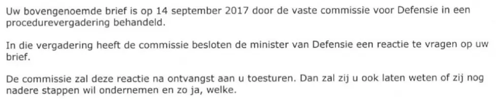

Preuve · Lettre
Commission permanente de la Défense à Giltay, 18 septembre 2017
Le passage
« Votre lettre susmentionnée a été examinée le 14 septembre 2017 par la commission permanente de la Défense lors d’une réunion de procédure. Au cours de cette réunion, la commission a décidé de demander à la ministre de la Défense une réponse à votre lettre. La commission vous transmettra cette réponse à réception. Elle vous fera alors également savoir si elle souhaite entreprendre d’autres démarches et, dans l’affirmative, lesquelles. » Page 1, le corps de la lettre, juste sous la formule d’appel. Traduit du néerlandais ; le texte original figure ci-dessous.
Texte original
“Uw bovengenoemde brief is op 14 september 2017 door de vaste commissie voor Defensie in een procedurevergadering behandeld. In die vergadering heeft de commissie besloten de minister van Defensie een reactie te vragen op uw brief. De commissie zal deze reactie na ontvangst aan u toesturen. Dan zal zij u ook laten weten of zij nog nadere stappen wil ondernemen en zo ja, welke.” Les lignes de la numérisation sont ici réunies et les trois paragraphes mis à la suite.

Pourquoi ce document compte
Le 1er juin 2017, Giltay a demandé à la Chambre des éclaircissements sur l’affaire de la dissimulation autour de Srebrenica. La commission permanente de la Défense a examiné sa lettre le 14 septembre 2017 lors d’une réunion de procédure. Elle a décidé à l’unanimité de demander une réponse à la ministre de la Défense. Dans la présente lettre, elle a promis à Giltay de lui transmettre cette réponse. Le ministre a répondu à la Chambre le 13 octobre 2017. Le 9 novembre 2017, la commission a transmis cette réponse à Giltay et en a pris acte. La lettre au Parlement traite de la pellicule et de l’affirmation selon laquelle la Défense aurait tenté de « psychiatriser » Giltay. Mais le MID et Casema n’y figurent pas. Aucune réponse de fond n’a jamais été apportée sur l’affaire du renseignement.
Provenance
- Document
- Lettre, une page, sur papier à en-tête de la Seconde Chambre
- Expéditeur
- Commission permanente de la Défense, Seconde Chambre des États généraux (Tweede Kamer der Staten-Generaal), La Haye
- Destinataire
- E. Giltay
- Date
- 18 septembre 2017
- Référence
- 2017Z09359/2017D25719
- Unanimité
- La décision a été prise sans voix discordante. Plusieurs journalistes assistaient à la réunion, parmi lesquels Marco Bakker et la reporter Esther Monsma de Hart van Nederland, dont le caméraman a filmé la réunion. Le livre (édition anglaise) qualifie la décision d’unanime, www.
dedoofpotgeneraal. nl/ book.pdf#page= 196 - Objet
- « Verzoek om opheldering over Srebrenica-doofpotaffaire » (demande d’éclaircissements sur l’affaire de la dissimulation autour de Srebrenica)
- Références
- En réponse à une lettre d’E. Giltay du 1er juin 2017, examinée le 14 septembre 2017 lors de la réunion de procédure de la commission
- Signé
- T.N.J. de Lange, greffier de la commission permanente de la Défense
- Langue
- Néerlandais
- Conservé par
- Edwin Giltay, le destinataire
- Voir aussi
- Lettre au Parlement du ministre de la Défense Dijkhoff à la présidente de la Chambre Arib, 13 octobre 2017
Cité dans :
- l’essai « L’interdiction tombée, le livre debout » dans les chapitres (2) « Le gouvernement se contredit », (3) « Ce que révèle le livre : la dissimulation autour de Srebrenica » et (11) « Mettre fin au silence pour Srebrenica »
- la biographie de l’auteur.
Document : https://
Dernière modification le 13 septembre 2026, consulté le 9 octobre 2026.

Cette page est une fiche de preuve du livre Le Général de dissimulation d’Edwin Giltay et du site web qui l’accompagne.